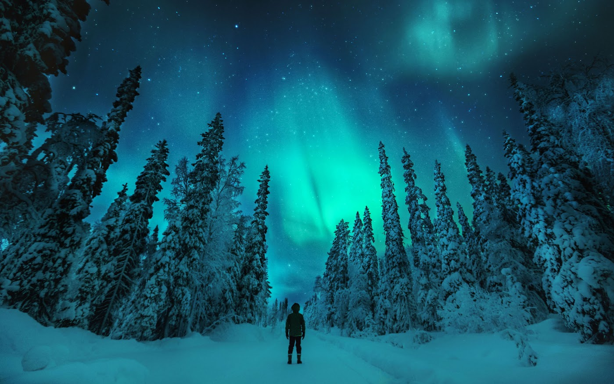

THE OTHERWORLDLY AURORA borealis, or nothern lights, begin high in the Earth's atmosphere-at altitudes from 60 to more than 250 miles- when charged particles from the sun become trapped in the Earth's magnetic field. The result is a colorful, dancing light show.

THE OTHERWORLDLY AURORA borealis, or nothern lights, begin high in the Earth's atmosphere-at altitudes from 60 to more than 250 miles- when charged particles from the sun become trapped in the Earth's magnetic field. The result is a colorful, dancing light show.
The first time I filmed an aurora was from an icebreaker near Antarctica. Luckily, there are more accessible places if you'd like to take in these light shows yourself. For the best seats to this celestial scene, consider anywhere with a magnetic latitude above 55 degrees and low light pollution. Find your magnetic latitude on NOAA and here.
In the polar latitudes, auroras can appear on any dark night. Long winter nights are good but not neccessarily the best time. Near equinoxes in March and September, the Earth's magnetic field lets more solar particles interact with the atmosphere, creating aurora season! I suggest autumnal equinox in September, when there are pleasent temperatures in polar latitudes. Find the dark hours of your location here, or by using a sky guide app.